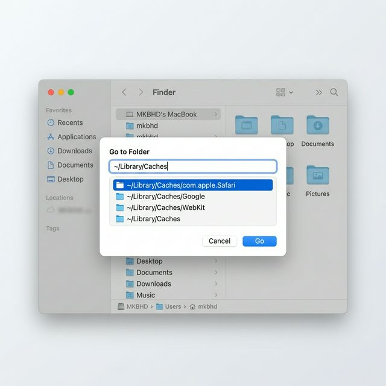

Більшість користувачів шукають папки, клікаючи мишкою по іконках. Але професіонали знають секретний шлях: комбінацію Command + Shift + G. Вона дозволяє миттєво потрапити навіть у ті папки, які Apple приховала від ваших очей.
Як це працює:
- Відкрийте програму Finder (або просто клікніть по робочому столу).
- Натисніть одночасно три клавіші: ⌘ Command + ⇧ Shift + G.

Навіщо це потрібно?
Це єдиний легкий спосіб потрапити в системні папки, наприклад, у Бібліотеку (Library), де лежать кеші програм, налаштування або логи. Наприклад, щоб почистити кеш, вам просто треба вставити шлях:
~/Library/Caches
Корисні лайвхаки:
- Автозаповнення: Почніть писати шлях і натисніть клавішу Tab — Mac сам допише назву папки за вас!
- Тильда (~): Цей символ означає вашу домашню папку. Наприклад,
~/Downloads— це ваші Завантаження. - Вставка шляху: Якщо ви знайшли інструкцію в інтернеті зі складним шляхом, просто скопіюйте його і вставте в це віконце.
Порада для розробників: Ця комбінація незамінна, коли треба швидко знайти приховані файли конфігурації (наприклад,
.ssh або .config).
Тепер ви знаєте, як пересуватися по системі Mac на швидкості світла!